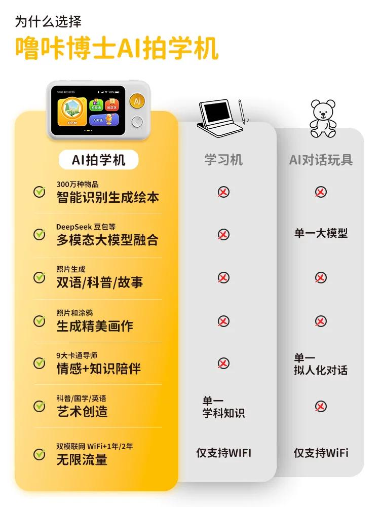

图文多模态大模型在儿童 AI 拍学机中的应用
技术领域：图文多模态大模型
作为公司首款消费级产品的核心成员，我主导了轻量级图文多模态模型的算法研发。该模型专注于万物识别任务，可根据输入图片输出主要物体的中英文名称，识别准确率达到 90%，在该任务上超过 GPT-4o 和 Qwen2-VL 等主流模型。
截至2025年中，AI拍学机销量突破10万台，累计销售额超6600万元。

“云天天书”大语言模型
技术领域：大语言模型
参与百亿级大语言模型的预训练、监督微调、价值对齐、数据处理与评测工作。自研模型曾在 C-Eval 和 CMMLU 等多个榜单取得第一，并落地于政策问答、公文写作和文档智阅等应用。
无损 LLM 推理加速：SPACE 与 BiTA
技术领域：高效大模型推理
研发了 SPACE 和 BiTA 等推理加速方法，在保证输出一致性的前提下实现 2 倍以上加速，效果优于 Medusa、LookAhead 等方法，达到业界领先水平。
12345 热线智能助手
技术领域：自然语言处理
为政府热线坐席开发智能助手，支持对话摘要、工单标题生成、命名实体识别、事项多级分类、知识库检索和语法纠错，整体提升客服效率 60% 以上。
基于深度学习的移动电话用户电池充电时间预测
技术领域：时间序列预测
基于数百万用户充电行为数据，将个性化充电时间预测建模为序列学习问题，设计深度学习模型和新的损失函数，效果优于 XGBoost 等传统方法，并已应用于华为手机。